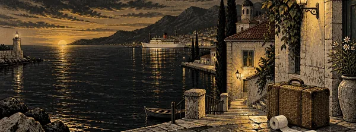
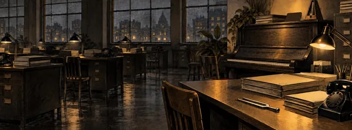
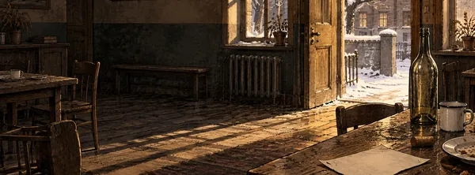
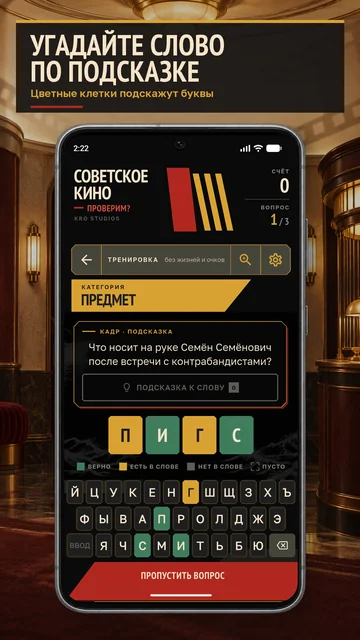
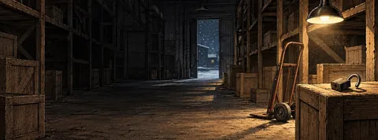
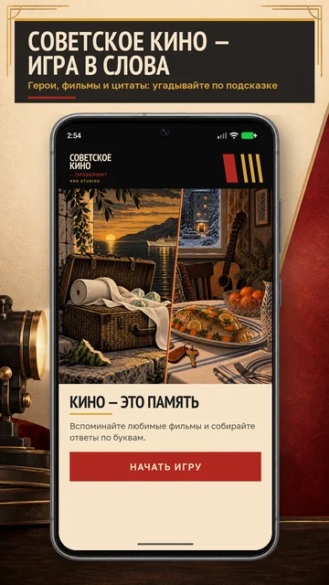
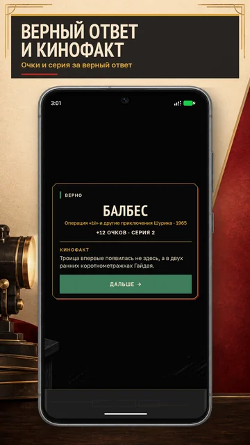
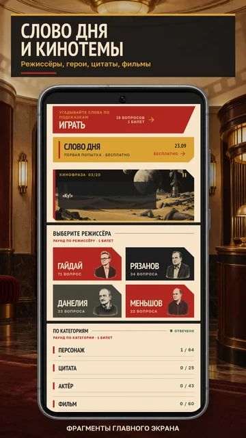
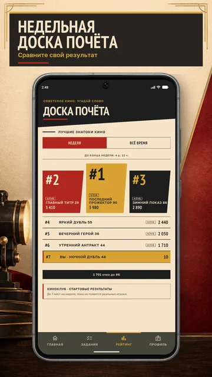

Прочитайте подсказкуВспомните фильм, персонажа, актёра, цитату или место.
ВИКТОРИНА ПО СОВЕТСКИМ ФИЛЬМАМ
Советское кино:Угадай слово
Помните больше, чем думаете. Проверим? Вспоминайте героев, актёров и цитаты из любимых советских фильмов. Один вопрос — одно слово в ответе.
64 фильма215 вопросовRU игра на русском
Скачать бесплатно — выберите свой магазин:




Знакомое кино. Новый повод вспомнить.
Собирайте ответ по буквам — и открывайте кинофакт после каждой разгадки.
Ваши любимые фильмыОт комедий Гайдая до историй Рязанова, Данелии, Меньшова и другой классики.
Подсказки по буквамЗелёная — на месте. Жёлтая — в другом месте. Попробуйте ещё ход.
Есть повод вернутьсяСлово дня, коллекции, кинофакты и доска почёта.
Проверьте себя прямо здесь
Вспомните кино
по одной подсказке.
Шесть вопросов из разных фильмов. Введите ответ — цветные буквы подскажут, что уже удалось вспомнить.
Это небольшой пример. Полная коллекция фильмов, ежедневные задания и ваш прогресс — в приложении.

С первого слова — в знакомый фильм
Вы это точно видели.
Иногда достаточно одной детали, чтобы вспомнить целую историю.
На местеВ другом местеНет в ответе
ПЕРСОНАЖ
Вопрос 1 из 6
Находчивый студент в очках: перевоспитывает хулигана, сдаёт экзамен и срывает ограбление склада.
Ответ — 5 букв.
Большая коллекция знакомых историй
64 фильма.
Знакомые истории.
В игре — 64 фильма. Угадайте слово по подсказке, вспомните цитаты из советских фильмов, любимых героев и актёров. Найдите свою историю в полной коллекции.
Вопросы о фильмах и героях. Иллюстрации созданы для игры — это не кадры из кино.
Посмотреть все 64 фильма
Все 64 фильма
- 12 стульев
- Афоня
- Баллада о солдате
- Белое солнце пустыни
- Берегись автомобиля
- Большая перемена
- Бриллиантовая рука
- Вокзал для двоих
- Гусарская баллада
- Дайте жалобную книгу
- Девушка без адреса
- Деловые люди
- Джентльмены удачи
- Добро пожаловать, или Посторонним вход воспрещён
- Дорогая Елена Сергеевна
- Жестокий романс
- За спичками
- Забытая мелодия для флейты
- Зеркало
- Иван Васильевич меняет профессию
- Иваново детство
- Инкогнито из Петербурга
- Ирония судьбы, или С лёгким паром!
- Кавказская пленница, или Новые приключения Шурика
- Карнавальная ночь
- Кин-дза-дза!
- Курьер
- Летят журавли
- Любовь и голуби
- Место встречи изменить нельзя
- Мимино
- Москва слезам не верит
- Мы из джаза
- Не горюй!
- Не может быть!
- Несколько дней из жизни И. И. Обломова
- О бедном гусаре замолвите слово
- Обыкновенное чудо
- Опасно для жизни!
- Операция «Ы» и другие приключения Шурика
- Осенний марафон
- Паспорт
- Пёс Барбос и необычный кросс
- Полосатый рейс
- Путь к причалу
- Розыгрыш
- Самая обаятельная и привлекательная
- Самогонщики
- Свой среди чужих, чужой среди своих
- Серёжа
- Слёзы капали
- Служебный роман
- Собачье сердце
- Совсем пропащий
- Солярис
- Спортлото-82
- Сталкер
- Старики-разбойники
- Тридцать три
- Формула любви
- Частный детектив, или операция «Кооперация»
- Человек с бульвара Капуцинов
- Экипаж
- Я шагаю по Москве
Такого названия в коллекции пока нет. Попробуйте другое слово.
Настоящие экраны игры
Вспомнили слово?
За ним — новая история.
Русская игра в слова и киновикторина для тех, кто любит советское кино. Сыграйте короткий раунд, выберите режиссёра или начните со слова дня.
Нажмите на экран, чтобы увеличить. На телефоне листайте галерею →




Введите одно словоЦветные буквы помогут уточнить следующий ответ.
Откройте кинофактИ проверьте, какую историю вы вспомните следующей.
Перед первым сеансом
Остались
вопросы?
Самое важное об игре и скачивании.
Что это за игра?
«Советское кино: Угадай слово» — бесплатная киновикторина по советским фильмам и игра в слова на русском. По подсказке нужно назвать один ответ: героя, актёра, фильм или место, либо продолжить цитату.
Какие фильмы есть в приложении?
В коллекции 64 фильма: комедии Гайдая, фильмы Рязанова, Данелии, Меньшова и другая классика. Посмотрите полный список фильмов — он есть на этой странице.
Нужно хорошо знать все фильмы?
Начните с того, что помните. Подсказка помогает найти ответ, а цветные буквы показывают верные позиции и буквы, которые стоит переставить. В приложении есть тренировка.
Где скачать и как найти игру?
На iPhone и iPad откройте App Store, на Android — Google Play. Введите «Советское кино: Угадай слово» и найдите наш значок с кинохлопушкой «КИ?О». Или воспользуйтесь официальными кнопками магазинов.
Игра бесплатная?
Скачать приложение можно бесплатно. В игре есть реклама, в том числе добровольные рекламные предложения с наградой.
Чем вопросы на сайте отличаются от приложения?
На сайте шесть примеров из игры. В приложении доступны полная коллекция вопросов, слово дня, подборки по режиссёрам и категориям, кинофакты, прогресс и доска почёта.
Советское кино:
Угадай словоKRO STUDIOS · ИГРА НА РУССКОМ
Продолжим
в игре?
Любимые фильмы уже ждут. Скачайте игру и проверьте, сколько осталось в памяти.
Бесплатно для iPhone, iPad и Android:
Не получается открыть магазин? Введите в поиске App Store или Google Play: «Советское кино: Угадай слово». Наш значок — кинохлопушка «КИ?О». Для Samsung, Xiaomi и Pixel выбирайте Google Play.